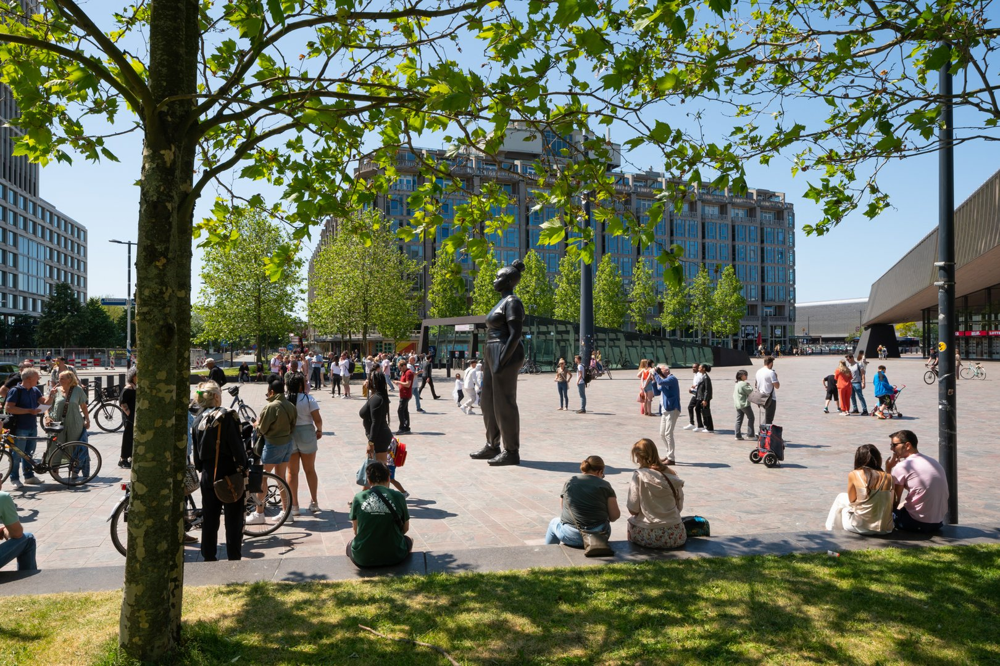
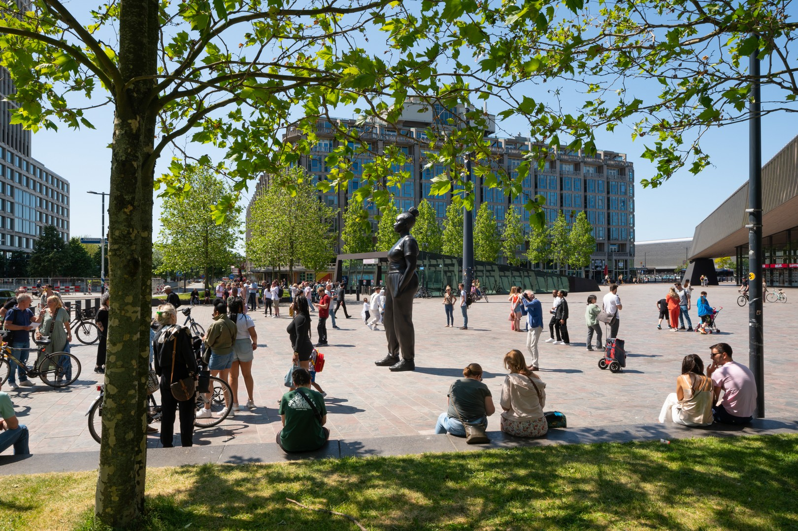

Context & Problems: Many station areas prioritize movement over staying. Without places to pause, spaces feel transit-oriented rather than human-oriented, which limits leisure use during non-peak times.
Solutions & Examples: With seating facilities like benches, a space creates opportunities for people to stay. Seating can be integrated into the spatial design through benches, ledges, steps, or sculptural furniture that invites people to rest, observe, and participate in public life.
Limitations: Seating alone does not guarantee attractive spaces; it works best when combined with Human-oriented spaces (7) and a coherent spatial layout.
Source of heuristics: Cases